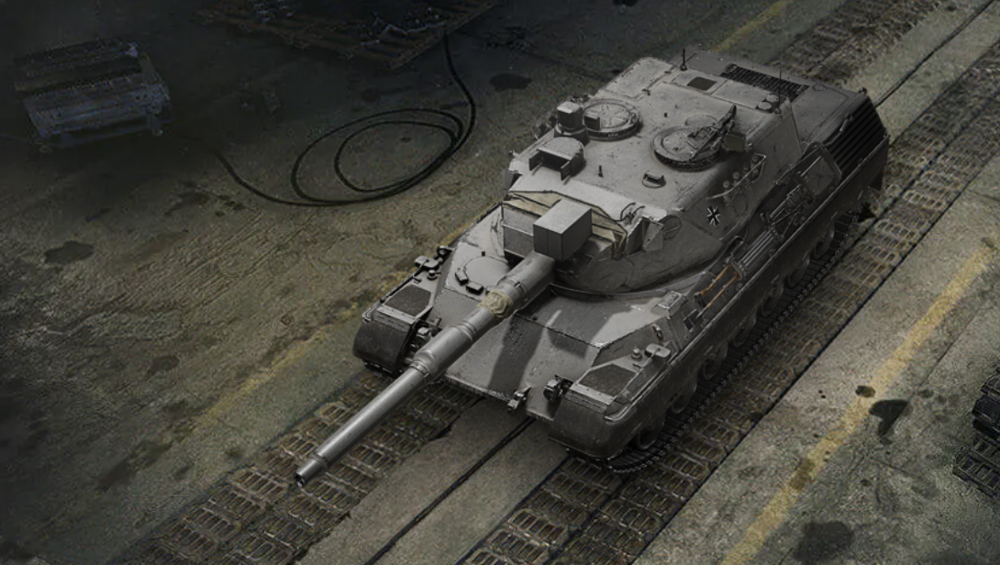

До бою, студенте!

Нові танки ХІ рівня:

Особлива навичка
Аналоговий балістичний обчислювач: залишаючись нерухомими або рухаючись повільно, ви накопичуєте рівні точності, які поліпшують влучність наступного пострілу. На максимальному рівні точності ви отримуєте комфортну гармату зі зменшеним розкидом навіть під час руху чи обертання башти/корпусу.
Переваги та недоліки:
- Надвисока влучність
- Підвищена мобільність
- Слабка броня
- Довге зведення
- Потреба триматися на дистанції
Грай на новому рівні!